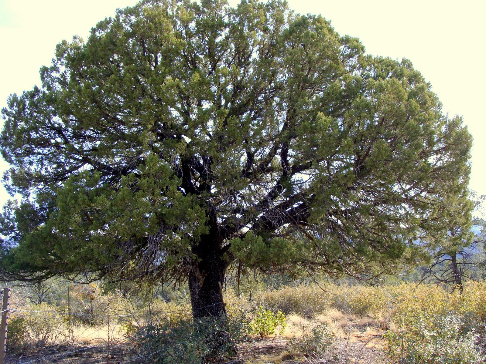
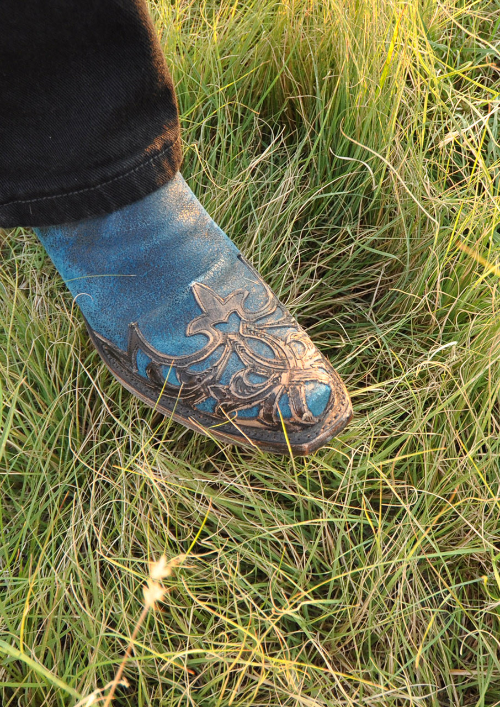

Fast-growing, hardy deciduous tree native to Asia, known for its adaptabiliy, small serrated leaves, and potential invasiveness in rome regions. You can find them growing along roadways and are often planted as windblocks.
The Siberian elm typically grows between 82-98 ft tall and has dark gray bark with shallow grooves, becoming deeply furrowed with age.
Brittle wood and weak branches make the Siberian elm prone to storm damage. Additionally it's aggressive seeding habit allows for the formation of dense thickets. Once established it can be difficult to eradicate.
At Windy Hill Homestead we welcome the Siberian Elms, as they offer shade, wind protection, and color to the landscape. We keep them away from our house, septic, and water lines since their deep root system could cause damage.
Juniper

There are many species of Juniper in Arizona:
Alligator Juniper
Utah Juniper
One-seeded Juniper
Rocky Mountian Juniper
Common Juniper
Junipers vary in size, but typically reach 33-49 feet in height. It's most distinctive feature is the bark, which is hard, dark gray-brown, and cracked into small plates.
Although Juniper trees are drought-tolerant evergreens, they are still impacted by prolonged drought. In 2021 the U.S. Forest Service reported thousands of Junipers dying. Their investigation estimated the "exceptional drought" resulted in 5 to 30 percent death across thousands of acres. Windy Hill Homestead has dozens of dead Juniper trees from this drought that need to be burned in order to reduce wildfire risk and clear out the rats making homes in the dead brush.
Buffalograss

Buffalograss in a native seed found on Windy Hill Homestead and also something we have planted. It can survive on as little as 12 inches of rain a year and withstands extreme heat and cold.
Buffalograss is deeply interwoven into American history
Starting with fossil remnants found in Kansas dating back 7 million years ago. It once was, and is now again, the principal forage grass for the American bison, hence the name. Cattle and bison will fatten in winter on grazing dormant, dry, standing buffalograss. Holds nutritional value better than modern day coastal bermuda hay. Early settlers made use of Buffalograss for building their sod homes, while historic longhorn cattle grazed it on their way up the Chisholm Trail.